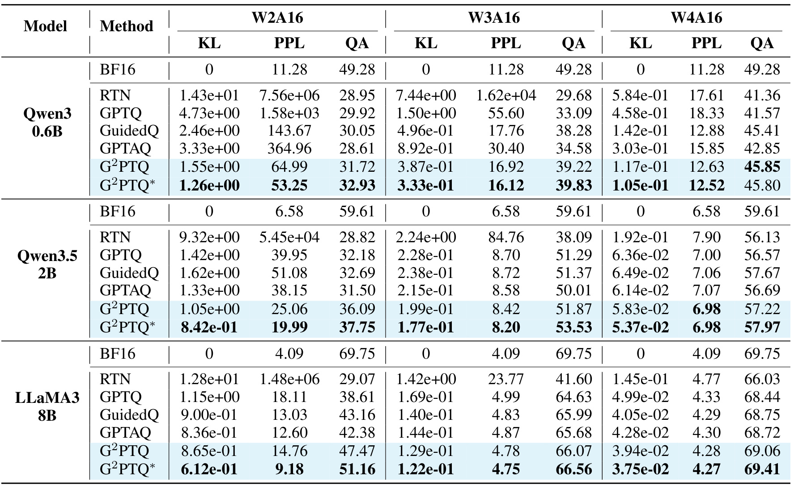
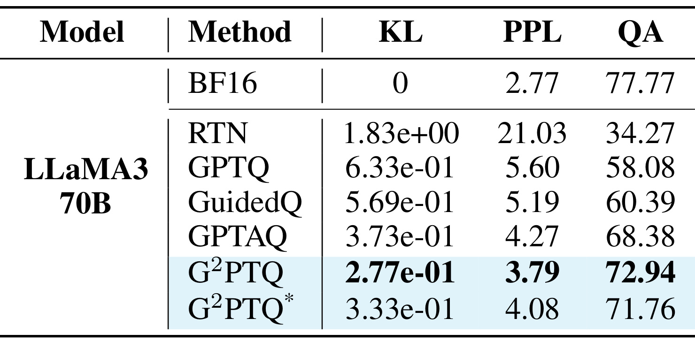
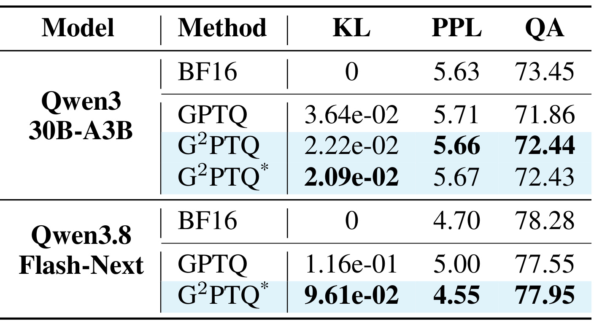
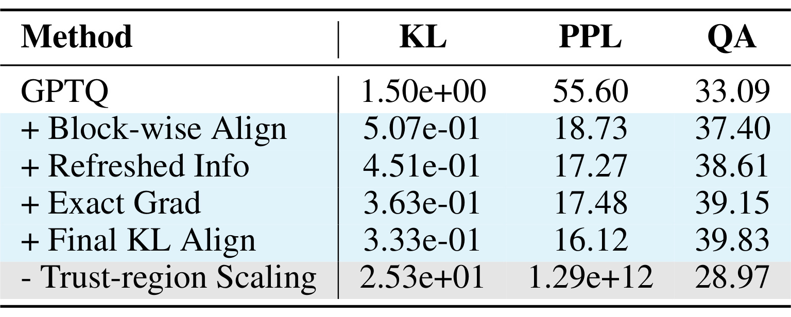
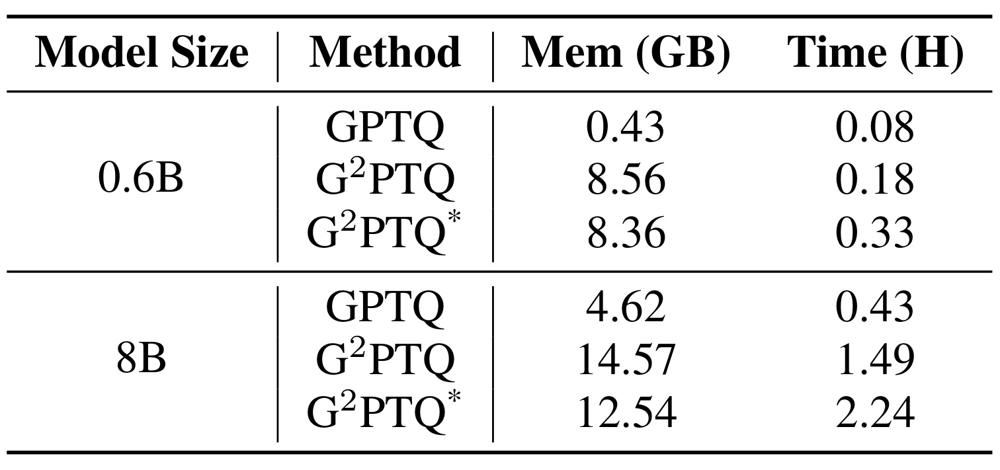

G²PTQ：用广义梯度补偿改善大模型训练后量化
《G²PTQ: Improving LLM Post-Training Quantization with Generalized Gradient Compensation》研究如何在压低权重和激活位宽时更好地保留大模型行为。Ruikang Liu、Haoli Bai、Yuxuan Sun、Qian Zhang 等作者来自中兴通讯、香港中文大学、西北工业大学、北京大学及南京航空航天大学，一作主机构为中兴通讯。论文于 2026 年 9 月 25 日公开，本文依据 32 页 v1 全文及附录撰写，记录日期为 2026 年 9 月 29 日。论文入口；作者仓库在本次核验时只有一个提交和 LICENSE，属于占位仓库，尚未公开算法实现，不能将“链接可访问”写成“实现已开源”。
现有量化补偿方法存在两类互补缺口：局部逐层目标缺少更全局的监督，而使用全局目标的方法往往固定最初的 Hessian、忽略一阶梯度，随着量化推进，补偿依据逐渐过时。如何在不过度增加计算成本的前提下，同时使用更新的一阶与二阶信息，并避免精确梯度引起权重更新爆炸，是本文要解决的问题。
1. 背景和问题
1.1 为什么更准的局部重建仍可能伤害模型
训练后量化的实际任务是把已经训练好的浮点参数映射到低位离散数值，让部署时占用更少的模型存储、内存带宽与计算资源。它通常只需要少量校准文本，不必重跑预训练或完整微调。这里的“不重新训练”并不等于完全没有反向传播：只要不靠常规梯度下降长周期更新模型，也可以利用反向传播测量损失对于参数的敏感度。G²PTQ 正是这种情况，其额外反向计算发生在校准阶段，最终推理过程不需要在线运行梯度补偿。因此评价方法应分开看压缩后的推理行为、生成量化权重的校准代价和最终任务准确率，不能把其中一个维度的改善自动等同于其他维度的改善。
GPTQ 的核心观点是，量化某个权重产生的误差可以通过调整尚未量化的其他权重来部分抵消。线性层输出等于权重与输入激活相乘，给定校准激活后，浮点与量化输出之间的均方误差是一个相对好处理的二次目标。Hessian 描述不同权重方向对该目标的曲率与相关性；它告诉算法，已经固定一个离散权重之后，剩余连续权重应往哪个方向移动，才不会让输出变化过大。这比逐个四舍五入更强，因为不同参数对误差的影响并不独立。但是，一层线性投影的输出接近原值，并不必然保证经过注意力、门控、激活函数和残差之后的整个 Transformer 块仍接近原行为。
这种差别在极低位宽下尤其重要。误差一方面会通过非线性被放大，另一方面会改变后续层实际看到的输入分布。若每个线性层只在自己的局部视野中完成最优补偿，最终词元分布仍可能偏离浮点模型。把目标换成整个模型的负对数似然或输出分布 KL，可以向局部权重提供更贴近最终任务的敏感性；但一次性计算这种敏感性之后就冻结下来，又产生时间维度上的错配。量化第一个块前的模型与量化了很多前置块后的模型已不是同一个状态，原来认为不敏感的权重方向可能已经成为需要补偿的方向。这是本文将“目标覆盖范围”和“统计量新鲜程度”放在一起讨论的原因。
1.2 一阶项为何重新重要，精确又为何不够
经典二阶补偿经常假设模型已经接近局部最优点，因此忽略一阶梯度。在单层对齐目标中，当浮点与量化模型起点完全一致，残差为零，这个假设有直观依据。然而随着前置层被压缩，后续块接收的是带误差的输入，当前权重即使还保留浮点值，也未必位于当前对齐目标的驻点。一阶信息因此反映了已有误差需要怎样被纠正。只看曲率相当于知道地形向哪里陡、向哪里缓，却忽略当前位置还有明确的下降方向；同时使用两者才有机会补偿前面累积的偏差。
FOEM 已重新引入一阶项，但为效率使用权重残差乘 Hessian 来近似梯度。这在固定激活下的单线性层均方误差中成立，因为损失是权重的二次函数，梯度确实是线性形式。若改用整个块的均方误差，内部非线性会使这种精确等式消失；对最终分布的 KL 或任务似然，它更不再是简单线性关系。因此本文不能仅把已有的一阶补偿直接嫁接到更大范围目标上，还需要实际反向传播得到梯度。这里的“精确”特指所选局部块目标、所用校准样本、当前模型状态下的梯度，不意味着得到了真实总体分布上的无误差梯度，也不意味着 Hessian 没有近似。
更容易被忽略的困难是，一阶梯度和近似 Hessian 可能来自不同构造的损失。通过梯度外积估计曲率时，梯度尺度被平方；而实际下降梯度只随损失尺度线性变化。两者相乘形成逆曲率预条件方向，其数值大小不再像纯 GPTQ 更新那样自动抵消尺度。附录分析说明，分别把两种损失缩放后，更新范数平方会按两个缩放系数的平方与负四次幂变化，较小的曲率估计就可能放大补偿。也就是说，计算出更真实的一阶方向并不能保证更好的量化：若步幅离开二阶展开有效的邻域，准确的方向仍可能造成灾难性的跳跃。
1.3 本文的全局性应如何理解
作者用“全局监督的块级优化”描述方法，阅读时需要保留其中的块级限定。中间 Transformer 块对齐自己的隐藏输出，最后一个块才直接对齐最终预测分布；每个块的梯度和曲率通过该块内部的反向计算刷新。它比独立线性层重建看得更远，也通过浮点参考轨迹与量化轨迹的比较感知前面累计的误差，但并非每量化一个权重就把最终损失穿过整个模型回传。这种折中决定了它的收益来源和局限：能观察块内交互、控制信息陈旧，同时避免频繁全模型反传，但不能直接声称每一步都优化了完整端到端任务目标。
G²PTQ 也没有提出新的离散数值格式。作者主要研究对称逐通道权重量化和逐词元激活量化，配合旋转、裁剪与激活重排序，在共同设置下比较补偿策略。普通版每个 Transformer 块刷新一次，星号版采用真正顺序量化，把块分成四阶段，在阶段前刷新统计量。两者具有不同的计算次数与准确率表现，应视为两种具体运行配置。对推荐工程而言，这篇论文最直接的关联是部署内容理解、语义特征生成或大模型重排器时如何减少压缩损伤；论文并未在推荐点击率、排序一致性或用户长期指标上给出验证，不能把通用问答的恢复直接转写为推荐收益。
逐块处理还有一个部署流程上的约束：校准输入必须经过实际已量化的前置块，若为省时而一直使用浮点激活，就会抹掉本文试图利用的累计误差。因而所谓刷新不仅是重新计算一个矩阵，还包括维护两条正确的前向轨迹。这也是复现时应优先检查数据流，而不只是比较更新公式的原因。
2. 方法
2.1 块级对齐与刷新的一阶、二阶统计量
方法的第一步是改变测量误差的位置，同时让测量对应正在量化的模型状态。 设浮点模型的第一个块接收原始输入，其输出沿浮点轨迹传向后面的块；另一条轨迹经过已量化的前置块，把带有累计误差的输入送到当前块。当前块一边保留浮点目标输出，一边以量化轨迹输入计算待补偿的输出。主文式（10）用中间块隐藏状态误差和最后块预测分布误差定义目标：
符号解释：$l$ 是当前 Transformer 块编号，$L$ 是最后一个块，$d$ 是隐藏维度，$h^{(l)}$ 与 $\hat h^{(l)}$ 分别为浮点参考和量化轨迹输出，$W$ 与 $\hat W$ 表示对应权重，$x$ 是校准输入。中间项要求整个块的输出接近参考，不只约束其中某个线性层；最后一项以浮点词元概率为教师，关注相对完整预测分布。附录算法先保存量化输入，再分别计算参考输出与当前输出，通过两次块内反向过程收集曲率所需激活梯度与真实权重梯度；量化完成后重新前向，传递更新后的隐藏状态。这样刷新是跟随累计误差的，而不是使用训练结束时的一份固定统计量。
直接存储全部参数的 Hessian 不现实。作者对中间块采用广义 Gauss–Newton 近似，并构造高斯扰动目标，使随机梯度外积的期望对应近似曲率；最后块从浮点分布采样标签，以负对数似然梯度外积近似 KL 的 Hessian。两种形式对应主文式（11）和式（12）：
符号解释：$a$、$b$ 是用于构造曲率的梯度行向量，$\epsilon$ 是协方差为 $dI$ 的独立高斯噪声，$I$ 为单位阵，$y$ 从浮点模型输出分布采样；停止梯度表示把扰动后的目标视作固定参考。这里的噪声只服务曲率估计，不能与量化噪声或真实训练标签混为一谈。实际更新所用的一阶梯度来自前一个真实对齐目标，而不是这份随机目标。进一步假定不同输出通道近似独立，把通道划成若干组，共享组内平均 Hessian，默认组数为四。附录还用期望下交叉项消失和跨词元影响较小等条件解释一次反向累积的近似；这些是降低成本的假设，并非对任意注意力结构都严格成立的恒等式。
2.2 精确补偿方向与信赖域步幅
保留一阶项后，算法在固定一个离散权重的约束下最小化局部二次展开。主文式（15）把更新分成经典二阶量化补偿与新的一阶补偿，两者的相对强度由信赖域系数控制：
符号解释：$w$ 是待更新的一行权重，$t$ 是当前被量化的位置，$\hat w_t-w_t$ 是必须满足的离散误差，$H^{-1}_{t,t}$ 与 $H^{-1}_{t,:}$ 为逆曲率的对角项和对应行，$e_t$ 是选中第 $t$ 个坐标的单位向量，$g$ 是当前块目标对这行权重的真实梯度，$\beta$ 是零到一之间的缩放值。一阶补偿中的两个部分在已量化坐标上相互抵消，因此它调整的是仍可移动的权重，不会破坏已经固定的离散值。当梯度为零或缩放为零时，更新退回纯二阶形式；只把更新写成负梯度乘逆 Hessian 会丢掉这个重要的约束校正。
信赖域限制的是二阶模型预测的损失变化预算，而不是宣称真实非线性损失每一步必然下降。 作者先计算纯 GPTQ 步骤预计引起的变化，再限制额外一阶补偿的绝对贡献，主文式（13）与式（14）给出：
符号解释：$c$ 是在固定量化坐标后剩余梯度方向对应的非负曲率量，$\Delta L_{\mathrm{GPTQ}}$ 是局部二阶展开预测的基准变化，$\alpha$ 是允许一阶补偿相对于基准变化的预算比例。若未缩放的一阶步幅已经在预算内，就可以取 $\beta=1$；若存在很强的放大风险，系数会减小。零梯度导致的退化情形需要数值保护，不能机械地执行零除。附录证明在二阶模型下两类更新的交叉项为零，从而额外变化为 $-c\beta+c\beta^2/2$，这使预算具有可解的形式。真实实现为提高并行度，对一行权重的缩放值取平均；因此单坐标推导、行级实现和原损失的行为需要分清。阈值通过每块的六十四条校准子样本网格搜索，在零到三之间以零点一递增，误差开始上升时提前停止，预算越大并不等价于质量越好。
2.3 Cholesky 递推与延迟批更新
如果每量化一列都为剩余子矩阵重新求逆，再计算梯度乘逆矩阵，新的一阶项就会极其昂贵。作者沿用 GPTQ 的 Cholesky 表示，令逆 Hessian 分解为 $LL^\top$，把不同步骤需要的乘积表示成可递减的外积之和。式（17）是关键缓存关系：
符号解释：$G$ 是整张权重矩阵的梯度，$L$ 是逆 Hessian 的 Cholesky 因子，$M$ 为只计算一次的中间矩阵，$F^{(t)}$ 表示第 $t$ 步剩余权重对应的梯度预条件乘积，并按原矩阵宽度补零。每完成一列，只需减去一个外积，不必重复求逆。由此量化权重更新部分从含列维四次项的朴素复杂度降到与 GPTQ 同阶的 $\mathcal O(\max\{d_{\mathrm{col}}^3,d_{\mathrm{row}}d_{\mathrm{col}}^2\})$。这里的同阶只描述这段矩阵更新算法；块内反向传播、统计量缓存、搜索阈值仍会增加总校准耗时和显存，不能用复杂度同阶掩盖后面的实测资源差异。
为减少内存带宽压力，算法继续把列分成小块，块内顺序量化，块外更新延迟到一批结束再执行。吸收行级缩放进入 $M$ 后，式（18）和式（19）写成：
符号解释：$Q$ 是当前列块，起止索引为 $q_s,q_e$，$R$ 为其后尚未量化的列，$B$ 是列块大小，$D=\operatorname{diag}(B-1,B-2,\ldots,0)$ 用于累计各列补偿被作用的次数，$E$ 是包含梯度修正的量化残差。它与普通 Transformer 块不是同一个“块”：前者是矩阵列的计算分组，后者是神经网络模块。作者使用两个 Triton 内核分别融合列量化与残差计算、块内权重与缓存更新；对大 MoE 还批量处理小专家，做校准数据与线性层量化的分布式并行，并异步卸载隐藏状态。星号版本在更细的四个阶段刷新信息，会改变实际统计量和运行代价；它并不是同一结果的误差条或显著性标记。
3. 实验结果
3.1 设置、评价口径与可比性
实验覆盖十三个稠密模型、两个 MoE 模型，规模从 0.6B 到 125B，包含 LLaMA3、Qwen3、Qwen3.5 以及 Qwen3.8-Flash-Next。除了常规分组查询注意力，覆盖对象还包含混合线性或稀疏注意力、门控残差与特殊词嵌入结构。模型数量与架构多样性比单一小模型实验更有说服力，但每种机制的严格因果消融主要仍在 Qwen3-0.6B 上进行。权重量化考察二、三、四位，联合权重激活量化考察四位；基线为 RTN、GPTQ、GuidedQuant 与 GPTAQ，统一使用标量量化器、旋转、裁剪和激活重排序。权重逐通道、激活逐词元对称量化，激活裁剪比例为零点九。
稠密模型使用 NeuralMagic 校准数据的一千零二十四条序列，每条长度二千零四十八；MoE 因为专家稀疏激活而增加到八千一百九十二条，不能假定同样大小的校准集合足以覆盖专家。KL 与困惑度在 WikiText2、UltraChat 和 NuminaMath1.5 上测量，后两者分别抽样一百二十八和二百五十六条测试样本，主文表格汇报跨集合平均值。QA 为 ARC-Challenge、ARC-Easy、C-Eval、HellaSwag、LAMBADA、PIQA 和 WinoGrande 七项准确率的平均，尽管作者统称常识问答，C-Eval 等任务的性质并不完全相同。KL 衡量浮点与量化预测分布的距离，越低越接近教师；困惑度越低越好，QA 越高越好，三者不应互相替代。
3.2 权重量化：低位宽的改善与剩余损失
先看只压低权重、激活保持十六位时，梯度补偿能否修复更大的离散误差。Table 1 把三个代表模型与三个权重位宽放在同一张矩阵中，能同时观察收益是否集中在最困难的二位设置。

Table 1 的每个模型分组内，BF16 行给出浮点参照，后面各行是统一量化设置下的不同补偿方法；横向三组依次为二位、三位、四位权重，每组包含 KL、困惑度和问答准确率。对 Qwen3-0.6B 的二位设置，GPTAQ 的平均 KL 为 3.33、困惑度为 364.96、QA 为 28.61%，星号版分别改善为 1.26、53.25、32.93%。LLaMA3-8B 的二位 QA 从 GPTAQ 的 42.38% 到星号版的 51.16%，差距为 8.78 个百分点；但浮点参照仍为 69.75%，说明明显恢复并不代表极低位量化已经无损。三模型平均后，GPTAQ 的二位 QA 为约 34.16%，星号版为约 40.61%，差值约 6.45 个百分点，相对增幅约 18.9%。论文主文用“6.45% increase”，若直接译成相对提高百分之六点四五，就会把两种统计口径混在一起。
同一张表还揭示不能把普通版与星号版合并成一个永远最好的方法。LLaMA3-8B 二位时，普通版 KL 为 0.865，反而高于 GPTAQ 的 0.836，困惑度也更高，但 QA 更好；真正使三项都领先的是星号版。Qwen3-0.6B 四位时，普通版 QA 为 45.85%，略高于星号版 45.80%，即更多刷新并非所有列都单调改善。随着位宽升高，各方法已经较接近浮点行为，可获得的绝对收益缩小，准确率抽样波动也更显眼。附录完整结果声称两个变体择优后，在三十九种稠密模型位宽配置中三十八种获得最低平均 KL；这个“变体集合的覆盖率”不能改写成某一个固定配置对每个任务全胜。对部署选择而言，需要固定一个配置，再比较自己的领域损失和成本，而不是事后按每个指标选最优变体。
阅读这些跨数据集平均值时，还应注意困惑度的尺度差异：二位量化可能在某一个域发生严重退化，使算术平均被极大值支配；平均值下降很大，未必意味着每种输入都等幅恢复。论文在附录分别列出三个域，复现时应保存分域结果，并将高损失样本和基准任务分开检查，避免一个平均数字掩盖最差场景。
3.3 联合量化：补偿激活误差的证据
当激活也降到四位时，前置块的误差与激活离群值会使状态偏移更明显。作者在 Table 2 选择 LLaMA3-70B 展示联合量化结果，检验更有信息的权重更新能否弥补一部分激活量化损伤。

Table 2 的各行共用同一个模型与联合量化设置，因此可以把准确率差异归于该实验协议下的补偿策略组合，而不是模型大小差异。GPTQ 的 QA 是 58.08%，GuidedQuant 是 60.39%，GPTAQ 已达到 68.38%，普通 G²PTQ 进一步达到 72.94%，星号版为 71.76%。普通版相对 GPTAQ 的提高应写成 4.56 个百分点，若换算相对比例则约为 6.67%；它距浮点 77.77% 仍有 4.83 个百分点。平均 KL 从 GPTAQ 的 0.373 降至普通版的 0.277，困惑度从 4.27 降至 3.79，与准确率方向一致，因此这不是只在一个离散 QA 分数上的偶然领先。相对基础 GPTQ，普通版 QA 恢复了 14.86 个百分点，说明在该模型与该激进设置中，上游误差感知是一个重要因素。
这张表支持“更好的权重补偿能够缓解累计激活误差”，却不能证明激活离群值问题已经消失。作者仍使用旋转和裁剪等共同前处理，结果是这些技术与补偿算法共同作用后的效果。它也为星号变体提供了明确反例：普通版三项平均指标都优于星号版，更多阶段刷新增加的信息并未转化为该模型上的更高质量。若只报告全篇最优星号数字，会遗漏这一部署上很关键的选择成本。附录 Table 15 扩展到七个中等或大型稠密模型，在部分模型上不同变体、不同域的收益会变化；主文这个 70B 结果不能当作所有模型联合量化的平均收益。实际验收应分别测长输入、用户提示模板和业务输出分布，再判断这类补偿是否保持排序器的分数差距或内容分类边界。
这里的权重补偿不等于重新学习激活量化器。输入被截断或离散化后，算法在剩余权重自由度上寻找较好的输出匹配，因此它依赖校准样本能表现真实激活范围。如果业务提示比校准序列更长，或者某些词元触发不同的离群通道，表中补偿幅度未必保留；适配实验应同时观察激活范围与块输出误差，才能辨别失败来源。
3.4 MoE：扩展性成立，接近浮点仍需限定
MoE 的困难除了参数总量，还包括校准样本可能不能均匀激活每个专家。Table 3 将普通稀疏专家模型与更大规模混合架构模型并列，观察这一机制能否超出标准稠密 Transformer。

Table 3 上半部分是 Qwen3-30B-A3B，BF16 的 QA 为 73.45%，GPTQ 为 71.86%，普通版为 72.44%，星号版为 72.43%。这里普通版提高了 0.58 个百分点，仍与浮点相差 1.01 个百分点；星号版 KL 更低，但 QA 并不更高。下半部分是 125B 的 Qwen3.8-Flash-Next，表中只有星号版结果，不能把它写成普通版的测量值。其 QA 为 77.95%，相对浮点的 78.28% 下降 0.33 个百分点，相对 GPTQ 的 77.55% 增加 0.40 个百分点。平均 KL 从 GPTQ 的 0.116 降至 0.0961，约降低百分之十七；这是分布保真改善的证据，但数值尚不为零，不能据此称数学意义的无损。
一个值得注意的现象是，星号版平均困惑度为 4.55，甚至低于浮点的 4.70，而 QA 仍略低、KL 仍大于零。这说明对有限测试集的语言似然改善不等于完全恢复教师行为，评价量化需要多个互补指标。附录 Table 16 的三位 Qwen3-30B-A3B 也显示普通版 QA 71.39% 高于星号版 70.73%，进一步说明刷新频率需要验证。对大模型的额外推理评测，Table 18 报告四个任务均值：浮点 75.59，GPTQ 75.17，星号版 75.40，三随机种子下星号均值比浮点低 0.19 个百分点。作者把这种小差距称为近乎无损，但表中的不确定性、任务差异与有限样本都要求谨慎；ArXiv-Math 并未因该补偿明显恢复。图表展示的是两个 MoE 与有限任务覆盖，不能据此断言所有专家路由模式、长上下文和线上生成稳定性都已经解决。
模型规模与激活参数量也要分别理解。三百亿参数、每次激活约三十亿参数的模型，不能按稠密三十亿模型估算校准覆盖：不同输入触发不同专家，曲率与梯度的样本有效数量取决于路由频次。论文增加校准序列和批量处理专家是为了缓解这种稀疏性，但表格没有展示每个专家的覆盖分布、尾部专家误差或极少见路由的稳定性。因此平均质量接近浮点是可扩展性的初步证据，而不是专家级误差都已均匀受控的证明。
3.5 机制消融：刷新与步幅控制各自贡献什么
整体成绩不能区分收益究竟来自更大的目标范围、一阶补偿，还是最后的输出分布对齐。Table 4 在同一个小模型、同一种三位权重量化条件下逐项叠加功能，并单独移除信赖域，提供最直接的机制证据。

Table 4 从 GPTQ 的 QA 33.09% 开始，加入块级对齐后达到 37.40%，这一阶段增加 4.31 个百分点，是表中最大的一次正向变化；平均 KL 同时从 1.50 降至 0.507，困惑度从 55.60 降至 18.73。加入信息刷新后 QA 到 38.61%，再加入精确梯度后到 39.15%，最后加入最终 KL 对齐后到 39.83%。因此把刷新与精确梯度合并看，相对于只做块级对齐一共增加 1.75 个百分点，但不能把这全部算成精确梯度一个部件的独立增益。精确梯度那一步的困惑度从 17.27 略升到 17.48，而 KL 和 QA 改善，再次显示三个指标并不完全同步。最终 KL 对齐同时降低到 0.333 的平均 KL 与 16.12 的困惑度，符合让最后块直接看输出概率差异的设计动机。
最后灰色行最重要：移除信赖域后，KL 增至 25.3，困惑度达到约一万二千九百亿，QA 降到 28.97%。这是一阶方向数值失稳的实证，不是轻微精度损失；实际实现必须把缩放机制作为算法组成部分，而不能当作可选的小超参数。附录 Table 8 进一步在精确与近似梯度之间直接比较，QA 为 39.83% 对 37.74%，差 2.09 个百分点；这比逐项叠加更直接检验了“在块级目标下用精确梯度”这一主张。不过这些消融主要是 0.6B 小模型，不能保证各组件贡献比例在 70B 或混合注意力模型中不变。附录的分组数研究也并非组数越多 QA 越好：从一组到十六组，KL 从 0.343 降到 0.323，QA 从 40.77% 到 40.53%，运行时间约翻倍。增加曲率精细度有真实成本，而任务准确率仍带噪声。
此外，逐项叠加消融的结果与完全独立地开关所有组件不同。前面加入的块级目标会改变后续梯度与曲率的含义，后面观察到的增量有条件依赖。作者指出没有刷新时，最初浮点点附近梯度为零，这意味着刷新和一阶项存在机制上的协同；不应把表中各行差值当作可任意移植到其他量化器的固定收益。
3.6 校准成本与实用性的边界
算法把新增矩阵更新的渐近复杂度控制到 GPTQ 同阶，并不意味着整个校准流程一样便宜。Table 5 单独报告显存与小时数，必须与质量结果一起读。

Table 5 的两组模型为 Qwen3-0.6B 与 Qwen3-8B，列中的 Mem 是校准内存消耗，Time 是完成校准的小时数，不是推理延迟或每词元吞吐。对 8B，GPTQ 为 4.62GB、0.43 小时，普通版为 14.57GB、1.49 小时，星号版为 12.54GB、2.24 小时。相对 GPTQ，普通版内存约为 3.15 倍、时间约为 3.47 倍；星号版内存约为 2.71 倍、时间约为 5.21 倍。因此摘要或引言中的“8B 仅需 12.54GB 与 2.24 小时”必须明确属于星号变体，不应与普通版的质量结论或其 1.49 小时时间混用。更细阶段刷新使星号版时间更长，但表中峰值显存反而低于普通版，这也提醒我们不能用“反向次数更多”直接推断峰值内存单调增加。
对 0.6B，GPTQ 只需 0.43GB、0.08 小时，普通版需要 8.56GB、0.18 小时，星号版需要 8.36GB、0.33 小时。小模型上内存增加的相对倍数尤其大，说明缓存激活、反向所需状态及曲率统计的固定或结构性开销不能忽略。附录报告 125B MoE 在八张加速器、八千一百九十二条校准序列下，GPTQ 每设备 19.48GB、总计 7.98 小时，星号版每设备 86.72GB、20.30 小时；这接近每设备 4.45 倍内存与约 2.54 倍时间，绝不是所有常见设备都能无门槛复现的开销。论文没有在此给出可直接转成线上延迟收益的完整硬件性能闭环，硬件型号与运行环境仍需随代码进一步核实。一次校准长期复用的模型可能摊薄成本，频繁更新业务模型则未必划算。
附录给出两个值得跟进但不能夸大的优化方向。阈值可从三位 Qwen3-0.6B 向相邻位宽与 Base 变体迁移，减少搜索，相关校准加速约为 1.20 至 1.33 倍；实验范围有限，不代表一个阈值可以跨所有家族通用。Hessian 引导的裁剪对 Qwen3 小模型改善明显，对 Qwen3.5 却可能退化，因此作者默认仍采用权重均方误差裁剪。Figure 1 中更多校准样本总体有助于稳定 G²PTQ 的分布距离，但准确率并非严格单调；校准集扩容需要根据专家覆盖与领域分布决定，不能只把样本数量当作通用精度旋钮。
4. 总结
4.1 值得保留的技术判断
G²PTQ 最有价值的贡献，是把“监督看多远”“统计信息是否跟得上量化状态”“一阶补偿是否数值稳定”三件事连接成可计算的算法。块级目标提供比单线性层更强的约束，刷新使前置块累计的误差进入后续补偿，信赖域又让精确梯度不至于被逆曲率尺度放大到失控。Cholesky 递推与延迟批更新使这种组合在算法复杂度上可落地。主文五张表分别回答质量、联合量化、MoE、机制和成本问题，证据链较完整；但可迁移的经验应当是这套误差测量与控制思路，而不是某个模型上的最高准确率。
对于内容理解或大模型重排器，建议先固定浮点模型的业务输出作为教师，再测试量化后分数分布、候选顺序和低频样本行为。本文的 KL 对齐思路有助于避免只看平均任务准确率，但生成词元概率与推荐排序分数不是同一种目标。若业务只使用某个中间表示作为语义特征，最后词元 KL 未必是最重要的保真标准；若业务输出结构化理由，则语法正确与事实一致又需要额外检查。这些是从算法机制出发的迁移设想，论文没有给出推荐线上实验，也没有证明点击率或收入提升。
4.2 局限与复现顺序
至少有五个限制需要保留。第一，官方仓库目前是占位状态，缺少实现、配置与内核细节，论文给出的理论和伪代码还不能等同于端到端可复现。第二，Hessian 使用广义 Gauss–Newton、通道分组以及跨词元影响近似，极低位宽导致模型远离浮点轨迹时，这些近似的适用性可能变弱。第三，信赖域保证发生在局部二阶近似中，行级平均系数与非线性真实损失之间仍有距离，不能把消融成功升级为无条件稳定性定理。第四，实验多使用同一校准来源，业务分布、专有语言、工具调用格式与安全拒答行为的保真尚未覆盖。第五，星号版并不总胜普通版，部分四位收益很小且缺少全面误差区间，部署选型必须对照实际统计波动。
后续跟进可按三个顺序推进。先关注仓库是否发布完整实现，逐项核对两次块内反向、行级缩放、四阶段刷新、Triton 更新和异常数值保护是否与推导一致；缺少这些细节时，不宜仅依据作者最优表值估算复现成功率。其次在一个可承担成本的小模型上复现 Table 4，保留相同旋转、裁剪、量化器和校准集合，同时记录梯度范数、曲率阻尼、缩放分布与每块误差，确认收益确实来自刷新和稳定补偿。最后再迁移到目标业务模型，做普通版与星号版、不同校准来源和不同位宽的受控比较，报告置信区间、最差子集以及一次模型更新的校准预算。
最终是否值得采用，取决于低位压缩能节省多少推理资源、质量损伤是否位于业务可接受范围，以及校准成本能否在模型生命周期内摊薄。二位场景的质量恢复幅度让本文值得研究，但距浮点表现仍有明显差距；四位场景可能更接近生产可接受的范围，却需要用真实延迟、吞吐和领域指标完成判断。本文提供了更有根据的补偿策略与多家族离线证据，尚未交付一个对所有模型、所有业务和所有硬件都最优的默认量化方案。